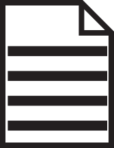

Adding and Committing files Remote Repository Local Repository  Staging Create File Create the file that will be used within your project. git add . This will add all modified and new files into the staging area. git commit -m "changed feature-x in file-x" This will add a message to your staged file. Create File Add File Commit Next Step